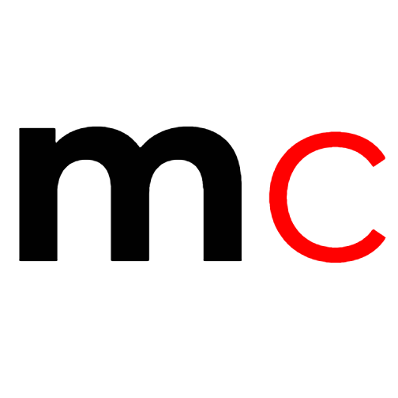
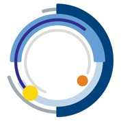

Columbia Data Science Institute (DSI) Scholars Program, Research Fellow
USA Computing Olympiad (USACO) Gold Divison
Citadel's The Data Open Competitor
St. Mark's School of Texas Class of 2018 Salutatorian, Cum Laude
The Gauss Award for Advanced Mathematics
The Computer Science Award
YHack (Yale University) Best Use of Wix API Winner
Texas ARML Gold Team, 6th in A Division
Harvard-MIT Mathematics Tournament (HMMT) 18th Guts
American Invitational Mathematics Examination (AIME) Qualifier
Tests of Engineering Aptitude, Mathematics, and Science (TEAMS) Contest 2nd Place Overall State
National AP Scholar
National Merit Commended
St. Mark's School of Texas Cum Laude Society
University of Rochester Bausch and Lomb Award for Science
The Leibniz Award for Calculus
American Mathematics Competition 12 (AMC 12) Distinguished Honor Roll
Texas ARML Gold Team, 5th in A Division
Harvard-MIT Mathematics Tournament (HMMT) 63rd in Geometry
United States of America Mathematical Talent Search (USAMTS) Honorable Mention
American Invitational Mathematics Examination (AIME) Qualifier
Texas A&M University Math Contest 8th Place Best Student Open, 2nd Place Power Team, 4th Place Sweepstakes
Tests of Engineering Aptitude, Mathematics, and Science (TEAMS) Contest 2nd Place Overall Region
National Spanish Exam Gold Medal
AP Scholar with Distinction
United States of America Junior Mathematical Olympiad (USAJMO) Qualifier
Sharygin Geometry Olympiad XII Correspondence Round Winner
United States of America Mathematical Talent Search (USAMTS) Bronze Medal
Texas A&M University Math Contest 6th Place EF Exam, 2nd Place Power Team, 2nd Place Sweepstakes
American Mathematics Competition 10 (AMC 10) Distinguished Honor Roll
Texas ARML Silver Team
The Polya Award for Precalculus
Harvard-MIT Mathematics Tournament (HMMT) 107th Individual
United States of America Mathematical Talent Search (USAMTS) Honorable Mention
American Invitational Mathematics Examination (AIME) Qualifier
Texas A&M University Math Contest 8th Place Best Student Open, 2nd Place Power Team, 4th Place Sweepstakes
Tests of Engineering Aptitude, Mathematics, and Science (TEAMS) Contest 1st Place Overall State
National Spanish Exam Silver Medal
Hi! I'm Jesse, and I'm current freshman at Columbia University pursuing a double major in Mathematics and Computer Science. My main interests academically
lie in applications in computer science to urban fields with real-world, positive social impact, such as computational spatial design or analysis of
dyanmic urban education planning. However, I always enjoy learning new things across all STEM fields, such as genetic sequencing and splicing in biology,
kinetics of reactions in chemistry, or even anlyzing equipotential surfaces in physics. I always enjoy my daily dose of exploring new topics through YouTube
channels such as Numberphile or Vsauce (I highly recommend these creators to anyone interested in acquiring knowledge across a breadth of various scientific
ideas and theories).
Outside of class, I enjoy many things which are physically extensive, which includes weekly pickup basketball games with friends and working out (I'm stil
trying to find the sweet spot when no one else is at Dodge). I'm a member of Uptown Local, Columbia's men's ultimate frisbee team, and I definitely enjoy
getting a breather from schoolwork a couple times a week to launch up and grab the disc in the end zone. I'm also a developer at SpecTech of The Spectator,
Columbia's weekly newspaper, and I work on anything from creating web pages for special events, such as Freshman Orientation, to Chrome extensions, such
as Vergil+ and The Shaft, which enhance Columbia students' processes in course registration and dorm selection, respectively. Finally, I've always loved
teaching, and I'm currently an instructor at Idea Math in NYC and a grader for AoPS, but I've worked for many places, including Mathnasium and Awesome
Math as well as my own tutoring initiatives. In my free time, I absolutely love coming up with unique math contest problems.
mathcycle

GitHub
a personal full-stack project that allows users to acquire new mathematical techniques and skills through a practice module, which contains
numerous problems of increasing difficulty across algebra, geometry, combinatorics, and number theory. GitHUb
Cardrop
GitHub
a full-stack web app created by my team and me at Yhack 2018 that paradigms an automated car rental system with features such as remote locking and
unlocking, instant access, zone location returns, and GPS location access. We won the Best Use of Wix API Award, out of over 800 participants,
utilizing their API to create custom site components and backend algorithms for improved UX
The Data Open

GitHub
a data analysis project that my team and I complelted at Citadel's East Coast Datathon of The Data Open in which we analyzed the market potentials
of renewable energy sources in the United States. We incorporated various datasets, including information on consumption, production, education, and
plant density to draw conclusions on the viability of renewable power.